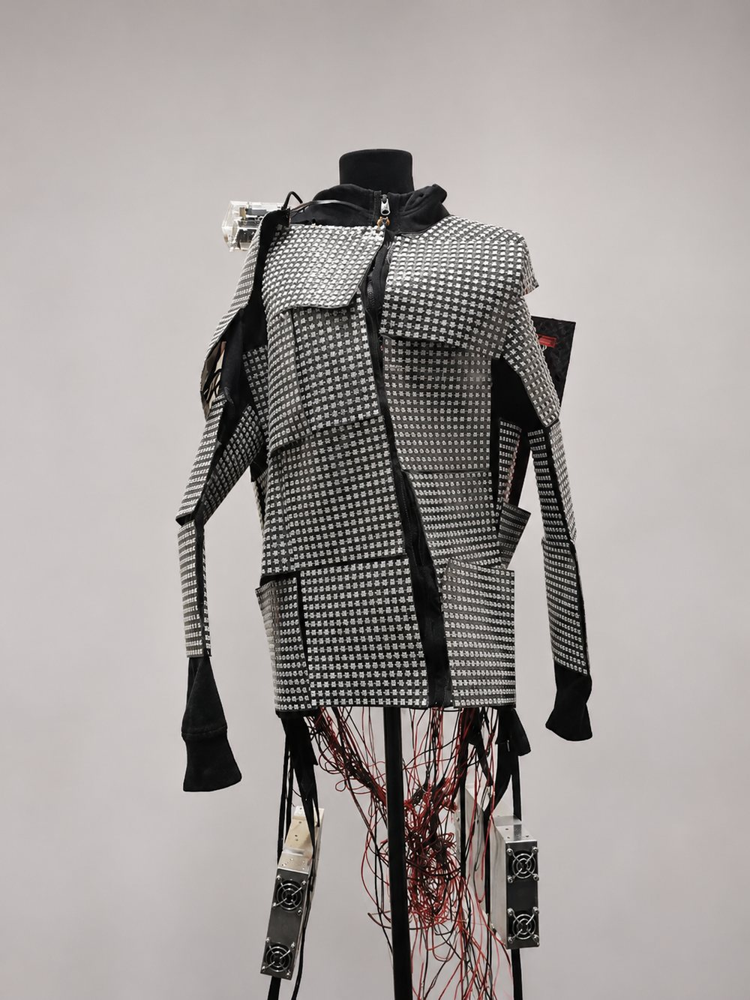
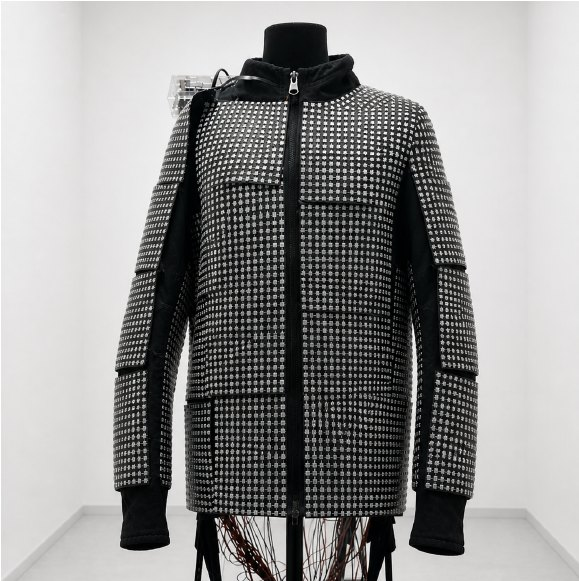
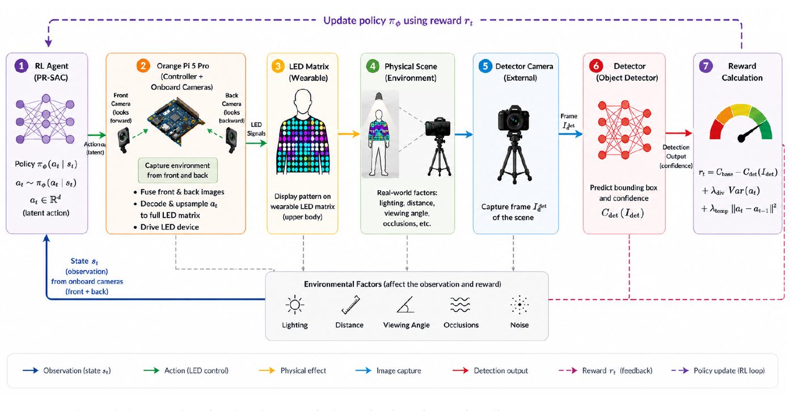
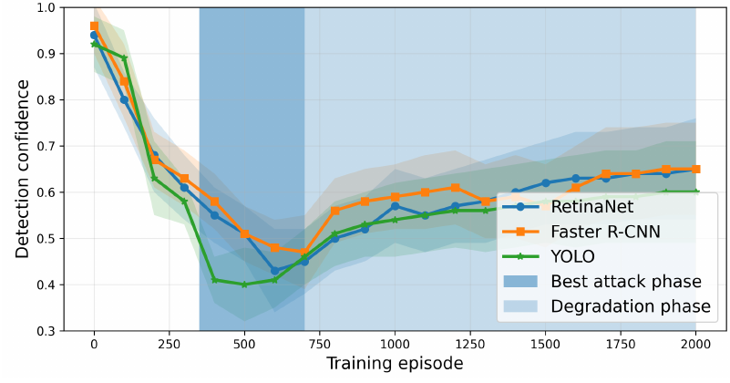
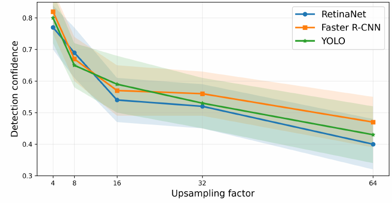
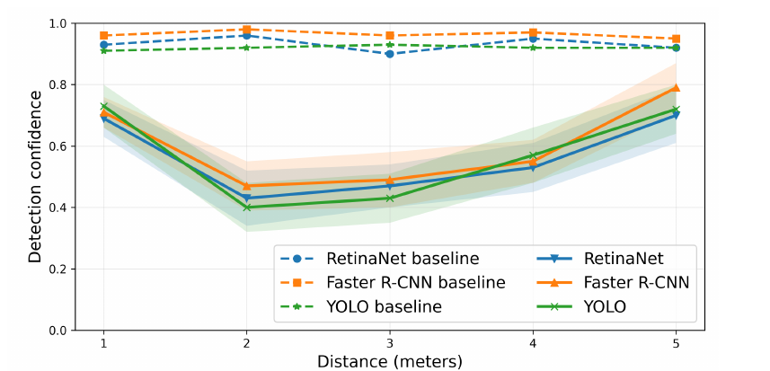
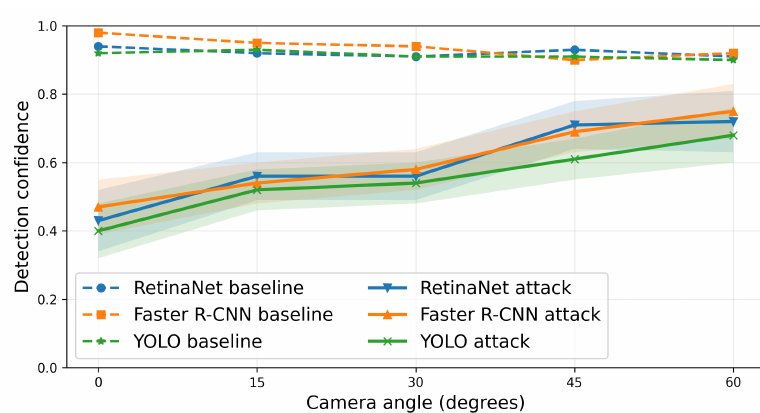
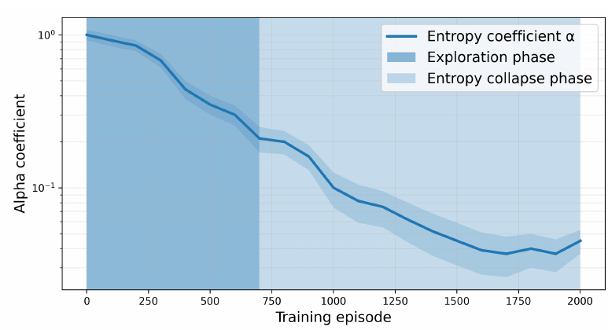
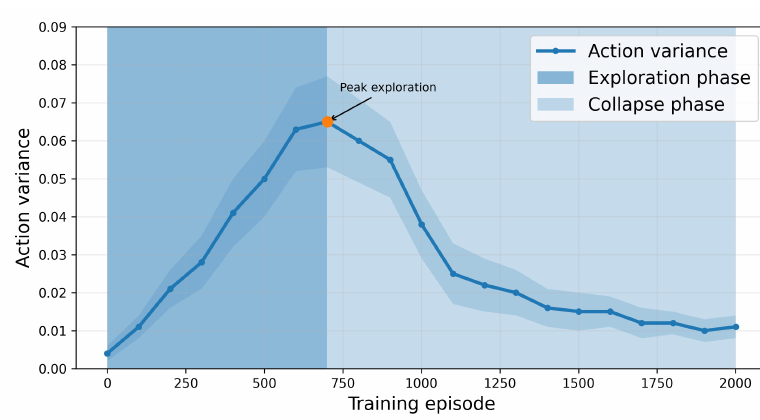

Dynamic Physical Adversarial LED Patterns via Reinforcement Learning
Closed-loop control of a wearable LED array to evade person detectors.

Abstract
Physical adversarial attacks today are static. This one is not.
Physical adversarial attacks expose limitations of computer vision systems, but most existing methods rely on static patches or textures. We study closed-loop physical adversarial control, where an agent adapts a programmable emissive actuator using environmental observations and black-box detector feedback during training. We implement this setting using a wearable RGB LED array and Physically Regularized Soft Actor-Critic (PR-SAC) with latent action parameterization. Across YOLOv8, Faster R-CNN and RetinaNet, dynamic PR-SAC achieves attack success rates of 89.1 %, 84.7 % and 86.8 %, outperforming optimized static LED patterns by 38.3–42.1 percentage points. Evaluation in unseen locations shows reduced but substantial attack effectiveness. We further analyze input-processing defenses and persistent training instability, including Q-drift and entropy collapse. Our results highlight the importance of evaluating adaptive physical attacks through direct evasion metrics, environmental generalization and training stability.
Motivation
Everything before this was optimized once, then printed.
Automated person detection is now routine in video surveillance, access control and scene monitoring. That raises a concrete question on both sides of the problem: how reliable are these systems against perturbations that adapt, and what can someone who does not consent to being tracked actually do about it? Physical adversarial attacks are the standard way to probe the first question, and the standing assumption in that literature is that the perturbation holds still.
Light, distance and viewing angle keep changing. The pattern doesn't.
Printed patches
Thys et al., 2019Adversarial T-shirts
Xu et al., 2020Camouflage textures
Hu et al., 2022Our question
Can an emissive pattern that adapts to the scene, using only black-box detector feedback, beat a fixed one?
Testbed
A wearable array of 9,984 RGB LEDs
- Two onboard cameras, front and back, capture the surrounding scene — this is what the policy observes. They are sensors, not evaluation cameras.
- A separate external camera records the illuminated garment and feeds the target detector — this is what the attack is scored on.
- The separation lets the policy condition on the environment while attack performance is measured independently.

Formulation
The attack as a closed-loop RL problem

+ λdiv · Var(at)
+ λtemp · ‖at − at−1‖2
The first term drives detector confidence down; the auxiliary terms encourage action diversity and temporal variation. Written as a stochastic physical composition, rt = g(D(R(at, θt))) + ξt, where R is physical rendering, D the detector and ξt measurement noise.
- Black-box. No gradients, no detector weights, no access to the evaluation camera or digital inputs.
- During training. Detector confidence only, plus observations from the two onboard cameras.
- At test time. The learned policy generates patterns from onboard observations alone — no detector feedback.
Challenge
Why RL is unstable in the physical loop
Noisy reward
Sensor noise and measurement noise ride on every detector score.
Drifting scene
Pose, light and distance change, so the Bellman operator becomes time-dependent.
Replay mismatch
Old transitions no longer match the current policy or the current scene.
→ Q-drift, entropy collapse, and degradation after the peak.

Method
PR-SAC: three fixes on top of Soft Actor-Critic
Regularize the actor
Penalize jumps between neighboring LEDs and between consecutive frames, biasing learning toward physically consistent trajectories.
Down-weight noisy transitions
The critic loss is weighted by the estimated reward variance, so unreliable physical feedback counts for less.
Recency-weighted replay
Stale samples from an older scene are discounted, reducing the mismatch between the replay buffer and the current environment.
These improve stability in practice. PR-SAC comes with no formal convergence guarantee — the Bellman operator is genuinely time-dependent in this setting. Sections 4.2 and 4.4
Action space
Latent actions tame 29,952 dimensions
Direct LED-level control reaches several thousand dimensions and destabilizes the critic. We act in a small latent space, then decode and upsample deterministically onto the full array.
Degradation after the peak falls along with it: 0.19 → 0.18 → 0.13. Table 1, mean over 15 runs

Main result
Adapting beats any fixed pattern
The decisive comparison is PR-SAC (dynamic) against PR-SAC (frozen) — the same trained policy, pinned to a single pattern. The gain comes from adapting, not from the pattern itself.
| Method | YOLOv8 | Faster R-CNN | RetinaNet |
|---|---|---|---|
| Clean | 0.4 ± 0.2 | 1.4 ± 0.9 | 0.6 ± 0.5 |
| Random LED | 8.7 ± 3.8 | 10.6 ± 4.1 | 7.9 ± 3.6 |
| CMA-ES (static) | 43.5 ± 5.4 | 45.1 ± 5.1 | 47.8 ± 5.3 |
| Vanilla SAC | 61.9 ± 6.0 | 55.8 ± 6.8 | 54.6 ± 6.3 |
| PR-SAC (frozen) | 50.8 ± 5.9 | 42.6 ± 5.5 | 46.8 ± 5.4 |
| PR-SAC (random snapshot) | 22.5 ± 4.9 | 20.8 ± 4.5 | 15.7 ± 4.3 |
| PR-SAC (dynamic) | 89.1 ± 4.3 | 84.7 ± 5.0 | 86.8 ± 3.8 |
| PR-SAC (unseen locations) | 77.3 ± 5.4 | 69.8 ± 5.6 | 74.5 ± 5.2 |
Generalization
New locations: weaker, but still strong
Trained policies evaluated without fine-tuning in locations excluded from training — new backgrounds, geometry and illumination. Attack success drops, yet stays above every static baseline measured in familiar conditions (≤ 50.8 %).


These results support partial environmental generalization; they do not establish robustness under arbitrary outdoor or sensor conditions. Section 5.1, Figure 5
Transferability
Patterns partially transfer across detectors
| Train ↓ · Test → | YOLO | Faster R-CNN | RetinaNet |
|---|---|---|---|
| YOLO | 0.40 | 0.48 | 0.51 |
| Faster R-CNN | 0.52 | 0.47 | 0.56 |
| RetinaNet | 0.54 | 0.55 | 0.43 |
Strongest on the training detector
Diagonal: 0.40 / 0.47 / 0.43 — the attack is tuned to the detector it was optimized against.
Still effective elsewhere
Off-diagonal confidence of 0.48–0.56, against 0.92–0.96 with no attack at all.
Defenses
Dedicated defenses help; none removes the attack
Generic transformations leave substantial residual evasion. Defenses built for physical attacks do markedly better, but RAPID — the strongest we tested — still leaves 17.6–29.8 % attack success.
| Defense | YOLOv8 | Faster R-CNN | RetinaNet |
|---|---|---|---|
| No defense | 89.1 % conf. 0.40 | 84.7 % conf. 0.47 | 86.8 % conf. 0.43 |
| Gaussian blur | 61.2 % conf. 0.54 | 56.8 % conf. 0.56 | 69.4 % conf. 0.51 |
| JPEG compression | 63.6 % conf. 0.53 | 58.9 % conf. 0.59 | 71.0 % conf. 0.56 |
| Morphological | 39.8 % conf. 0.69 | 30.9 % conf. 0.73 | 46.5 % conf. 0.66 |
| UDFilter | 35.7 % conf. 0.70 | 27.8 % conf. 0.74 | 41.2 % conf. 0.68 |
| RAPID | 24.6 % conf. 0.74 | 17.6 % conf. 0.78 | 29.8 % conf. 0.72 |
Stability
Entropy collapse is delayed, not removed
Both the entropy coefficient and the action variance decay over training. PR-SAC pushes the collapse later, but does not eliminate it — and the collapse coincides with the degradation phase. Checkpoints are therefore selected by minimum mean confidence on a held-out validation sequence.


Percentage of frames with no person detection matching the ground-truth box at IoU ≥ 0.5 and confidence ≥ 0.6.
15 independent seeds × 300 evaluation frames. Run-level mean, standard deviation and 95 % Student-t confidence intervals.
2,000 episodes of roughly 10–12 s each — about 5–6 hours per run.
An operator varies pose, viewpoint, distance and illumination under a shared randomization schedule. Section 4.5
Limitations & impact
What this does not show
Limitations
Three person detectors and a single wearable LED platform. Performance depends on lighting, viewpoint, distance and camera characteristics; unseen-location results do not establish robustness under uncontrolled conditions. Other target classes, other actuators, adversarially trained detectors and certified defenses remain untested. Training is unstable and takes roughly 5–6 hours per run.
Broader impact
This work studies vulnerabilities of computer vision systems under physically realizable adaptive attacks. Such methods could be misused to evade surveillance or safety-critical perception systems; our goal is to improve robustness evaluation under realistic physical conditions. By analyzing transferability, environmental robustness and defense interaction, we aim to support the development of more reliable vision models.
Responsible release
To mitigate misuse risks, we do not release real-time deployment tools or optimized policies for specific targets.
Citation
BibTeX
@inproceedings{zyryanov2026dynamic, title = {Dynamic Physical Adversarial {LED} Patterns via Reinforcement Learning}, author = {Zyryanov, Konstantin and Lotts, Nikita}, booktitle = {Advances in Neural Information Processing Systems 40 (NeurIPS 2026)}, year = {2026} }